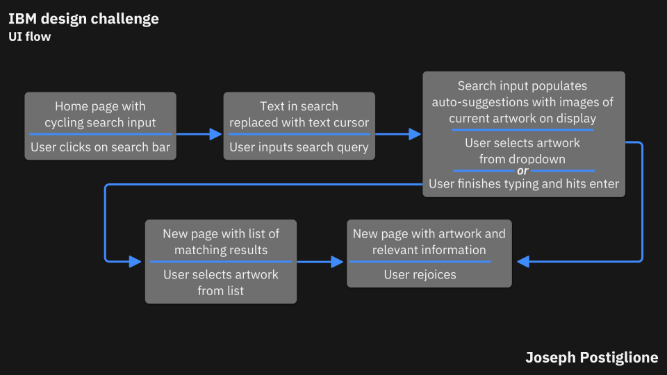
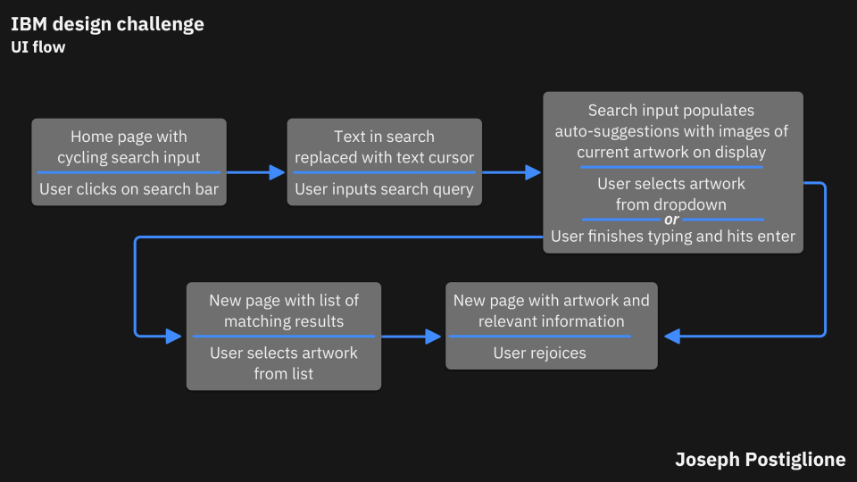

IBM Design Challenge
A quick redesign of the Louvre's search function.
Project Overview
- My Roles: Interaction Design, UI Design
- Platform: Desktop
- Time Frame: 4 Hours
- Tools: Sketch
The Prompt
Redesign parts of a website for the world’s largest museum: The Louvre. Your co-worker, a user researcher, has analytics that show many users are looking for information on prominent pieces of art, but are leaving before they find what they want. Propose changes to address this feedback.
The Proccess
Given the extremly short window for this design challenge I forewent any generative or evaluative research and only conducted a quick heuristic analysis and design audit of www.louvre.fr/en. I believe the issues users are experiencing may be exacerbated by the inconsistencies in design and the lack of familiar UI patterns. The search function should have clear entry points and serve as a gateway for new and returning visitors to find information on art easily and quickly.

Since the Louvre website is a non-responsive site, I have decided to focus on using UI patterns that would be scalable for all platforms. This way a visitor may access information before, during, or after their trip.
Ideation
 

I used the design exercise crazy 8's to rapidly ideate solutions and created a UI flow to map out the user's journey through the search function.
Wireframes

By adding common UI patterns the user is immediately familiar with the search function. Any information they need on a piece of artwork at the Louvre can be found quickly and accurately.
High Fidelity Comps
.svg)
.svg)
.svg)
.svg)